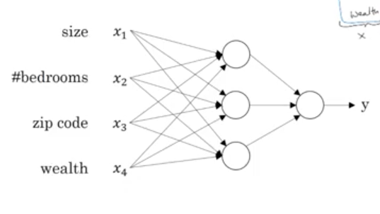

Home QGraph
Notes on Logistic Regression
I am doing Andrew Ng's course on deep learning, and summarising the lectures here. Feel free to send me pull request
to make this page better.
Welcome
AI is new electricity, transforming numerous industries.
Neural Network
Looks like this

Multidimensional input goes to the neurons in first layer. Output of first layer neurons goes to second layer, and so on.
Housing problem is structured, ads clicked or not is structured. Audio, image, and are unstructured.
Deep learning is taking off now because there is lot of data to train on, and computing power to perform this training.
Logistic Regression
We are given $(x, y)$ pairs where $x \in R^{n_x}$ and $y \in \{0, 1\}$.
$x$ is written as a column vector.
We want $\hat{y} = P(y = 1 \mid x)$.
We denote those pairs as $(x^{(1)}, y^{(1)}), (x^{(2)}, y^{(2)}) \dots (x^{(m)}, y^{(m)}) $
We say $\hat{y} = \sigma(w^{T}x + b)$, or $\hat{y} = \sigma(z)$ where $z = w^{T}x + b$
by which we mean
$\hat{y^{(i)}} = \sigma(w^{T}x^{(i)} + b)$ for $i = 1\dots m$
where $w \in R^{n_x}$ is again a column vector, and $b \in R$ and
$\sigma(z) = \frac{1}{1 + e^{-z}}$
$w^T = [w_1, w_2, \dots w_{n_x}]$
$\sigma(z)$ called "activation function". There can be many activation functions. They are the
ones which give rise to non linearity in logistic regression and neural networks.
Now we need to find $w$ and $b$ such that cost function
$J(w,b) = \frac{1}{m} \sum_{i=1}^{m}L(\hat{y^{(i)}}, y^{i})$
is minimized, where
$L(\hat{y}, y) = -(ylog\hat{y} + (1 - y)log(1 - \hat{y}))$
$J$ is called cost function, $L$ is called loss function.
Gradient Descent to Solve the Problem
Main idea is, start with some value of $w$ and $b$, and then repeatedly:
$w_i = w_i - \alpha\frac{dJ(w,b)}{dw_i}$ for $i = 1\dots n_x$
$b = b - \alpha\frac{dJ(w,b)}{db}$
till $w$ and $b$ converge.
Now, for one training example, let us use $\hat{y} = a$.
$\frac{dL(a,y)}{dw_1} = \frac{dL(a,y)}{da}\frac{da}{dz}\frac{dz}{dw_1}$
where $z = \sigma({w^{T}x + b})$
It simplifies to
$\frac{dL(a,y)}{dw_1} = (-\frac{y}{a} + \frac{1-y}{1-a}) * a(1-a) * x_1$
$= (a - y)x_1$
Similarly, we can find that
$\frac{dL}{db} = \frac{dL}{dz}$
Some notation
We denote $da = \frac{dL(a,y)}{da}$, $dz = \frac{dL(a,y)}{dz}$ and $dw = \frac{dL(a,y)}{dw}$
Thus we write:
$dz = (a - y)$, $dw_i = x_idz$
Now, since you know $dw_i$, if there were just one training example, you could do
$w_i = w_i - \alpha dw_i$
repeatedly till $w_i$ converged.
But we have $m$ training examples.
Gradient descent on $m$ training examples
Thus, summing over $m$ training examples,
$\frac{dJ}{dw_1} = \frac{1}{m}\Sigma_{i=1}^{m}\frac{d}{dw_1}L(a^i, y^i)$
$= \frac{1}{m}\Sigma_{i=1}^{m}dw_1^{(i)}$
We call $dw_1 = \frac{dJ}{dw_1}$
and set $w_1 = w_1 - \alpha dw_1$
Similarly for $dw_2\dots dw_{n_x}$
And $b = b - \alpha db$
Vectorizing Logistic Regression
Since $x$'s are written as column vector, we can introduce
$X =
\begin{bmatrix}
\mid & \mid & & \mid\\
x^{(1)}& x^{(2)} & \dots & x^{(m)}\\
\mid & \mid & & \mid
\end{bmatrix}$,
$X \in R^{n_x \times m}$
Also, $Z = [z_1,\dots z_m]$
And, $W^T = [w_1, \dots w_{n_x}]$. Note that we just declare $W = w$
So, $Z = W^TX + b$
$A = \sigma(Z)$
$dZ = A - Y$
where $A = [a^{(1)}, \dots, a^{(m)}]$, $Y = [y^{(1)}, \dots, y^{(m)}]$
$db = \frac{1}{m} sum(dZ)$
$dw = \frac{1}{m}Xdz^{T}$
$w = w - \alpha dw$
$b = b - \alpha db$